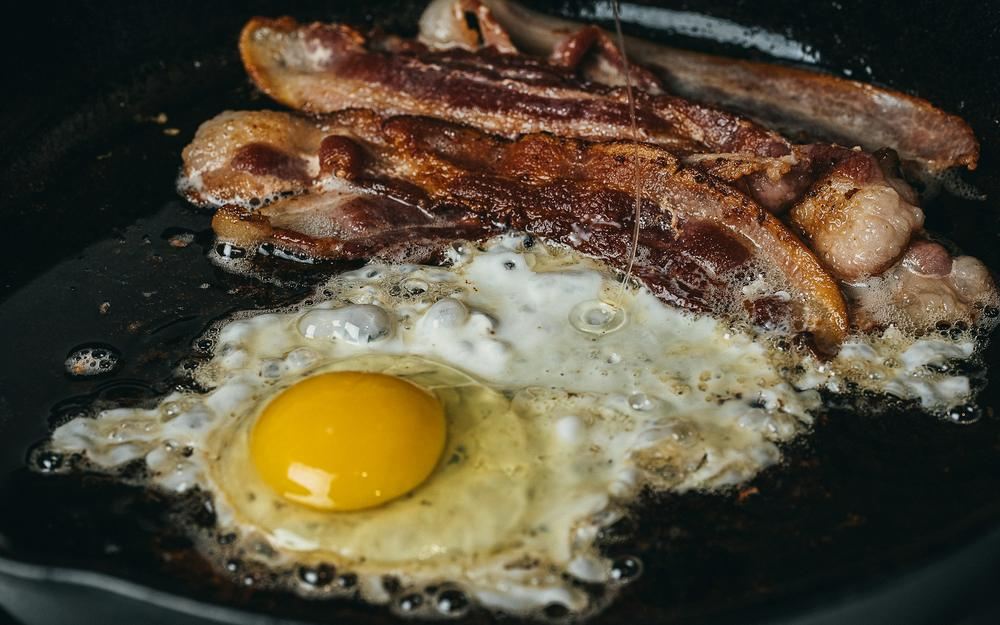
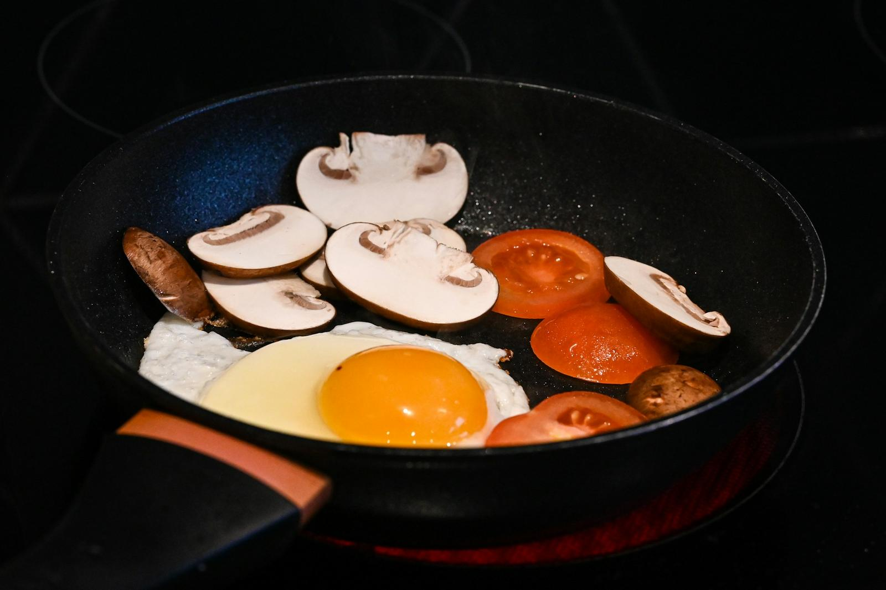

Full English Breakfast £16.50
Two eggs, bacon, homemade herby sausages, pork belly, black & white pudding, bubble & squeak, vine tomatoes and beans, served in the pan.

Big breakfasts, served sizzling in the pan.
A cosy neighbourhood café on The Vale, cooking breakfast, brunch and lunch from 6am, Monday to Saturday.
Hello, neighbour
Cafe Paolo is a small, cosy café at 1 The Vale, W3, on the Uxbridge Road stretch through East Acton. It’s an early-morning spot: the kettle’s on from 6am, six days a week.
The house speciality is the fry-up, brought to the table in its own frying pan so everything stays piping hot. There’s plenty more on the menu too, from Mediterranean and vegetarian breakfasts to smashed avocado and pancakes.
Come on in
| Monday | 6am – 2pm |
| Tuesday | 6am – 2pm |
| Wednesday | 6am – 2pm |
| Thursday | 6am – 2pm |
| Friday | 6am – 2pm |
| Saturday | 6am – 2pm |
| Sunday | Closed |
Cafe Paolo1 The Vale (East Vale), Acton
London W3 7RU